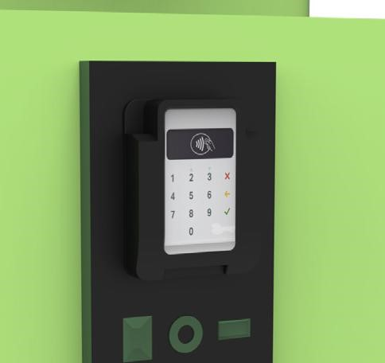

En muchas ciudades, los parques y espacios públicos son esenciales para el ocio y la vida social, pero carecen de infraestructura para acceder a agua caliente. Esto limita el disfrute de bebidas tradicionales como el mate o el té, afectando la experiencia al aire libre. Surge así la necesidad de una solución práctica y sostenible que facilite el acceso a agua caliente en cualquier lugar.
El dispensador autónomo de agua caliente es una solución innovadora diseñada para espacios públicos y privados. Su sistema alimentado por energía renovable, como paneles solares, permite disponer de agua caliente en cualquier lugar, ideal para la preparación de bebidas como el mate, té o café. Su diseño compacto y accesible lo hace perfecto para parques, plazas y otros puntos de encuentro, donde la falta de infraestructuras para obtener agua caliente ha sido un inconveniente. Entre sus principales ventajas destacan>

Funciona mediante un mecanismo que requiere ejercer presión sobre el saliente para liberar el flujo de agua caliente, evitando así pérdidas innecesarias. Esta acción garantiza que el agua salga a una temperatura óptima de 85°C, ideal para preparar bebidas como té o mate, proporcionando una experiencia sencilla y segura para el usuario.
El dispensador utiliza un sistema de pago contactless, que permite a los usuarios abonar de manera rápida y segura mediante tarjetas de crédito o débito. Este método elimina la necesidad de efectivo, haciendo que el acceso al servicio sea más cómodo y eficiente
En eventos al aire libre como ferias y conciertos, facilita el consumo de té, café o mate sin necesidad de cargar con equipo personal. También es ideal para personas en tránsito, como en paradas de autobús o estaciones de tren, donde ofrece una solución rápida y cómoda.
Este sistema puede instalarse en múltiples ubicaciones, incluyendo parques, centros comerciales, estaciones de servicio, plazas públicas, universidades, hospitales, aeropuertos y áreas de descanso en autopistas.
Su diseño autónomo y alimentado por energía renovable lo hace adecuado tanto para entornos urbanos como rurales, donde la falta de infraestructura para obtener agua caliente ha sido un problema frecuente.